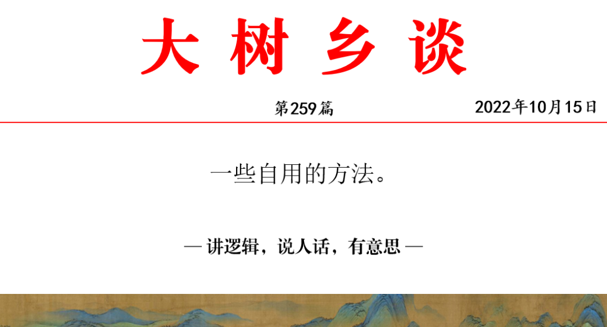
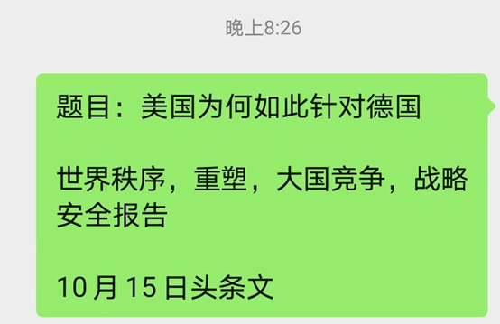

方法论分享：小镇是如何完成一篇文章的

有不少读者对小镇如何写作很好奇，今天分享下，也是谈方法论，抛砖引玉，希望能给更多人带来一些启发。就以问题形式分享吧。
- 1 -
第一个问题：每天如何写作，花了多少时间？主条和次条有什么区别？小镇目前每天基本保持5000字左右分享，但其实用的时间并不太多，从开始写到完成初稿、校正、编辑、排版、预览审定、调整错别字、发布等所有过程加在一起，两篇一般在2个半小时以内，纯写的话基本在2小时以内。公众号的文章是一件比较舒服的文体，不需要像正式文件那样字斟句酌，讲究句句有出处、不能自己“发明”，反而一定要有自己的观点，进而通过搜集信息、分析推导证明自己的观点成立。
当然这个过程比较复杂，一天写一篇就不错了，所以主条就是有观点、有论据、有推导，尽可能完整；而次条基本就是抛出一个观点，论证、论据有所简化，又或者有些事想要谈谈，但几百个字就够了，也会以次条的方式发出。主次条并不存在质量差异，有时候次条可能会更加一针见血，比如前不久一篇《未来，会有更多女性领导人上台》，直接给出了结论，未来欧洲一定会有更多女元首出现，一些男政客会暂时“缩”起来，只给了观点并没有去论证，但事实与小镇说的基本符合，后来新增一篇次条《盲从之下，有人正在持剑观望》也是类似的。
小镇很喜欢写公众号，酣畅淋漓，甚至有一种放松、享受的感觉。小镇写文前没有任何提纲，觉得某件事挺有意思，值得写、也能写，那就直接开始，写着写着后面的内容就出来了，这也是小镇能够节约大量时间的原因。用的工具就是word和搜狗拼音输入法，键盘也是华为笔记本标配键盘，工具用久了顺手就行。初稿完成后直接粘贴到腾讯公众号后台，刷一遍字体和间距就开始简单雕琢，一般两遍。第一遍重在逻辑是否成立、框架是否完整、阅读是否舒服对文章结构、段落进行调整，进行文字的加粗以及颜色调整，也会修改一些显而易见的错别字。
为避免大段文字导致阅读疲劳，也会在合适位置找一些图片。第二遍发预览，在手机端看一下，感受下手机阅读是否舒服，另外手机阅读更容易发现错别字，再微调一下；这一遍还有个重要工作，就是思考是否有敏感、可能违规的地方，确保文章安全。两遍之后，基本就完成了。这是主条，如果是次条，那就更简单了，直接在公众号后台写，写完过一遍就行了。
- 2 -
第二个问题：如何了解到这么多信息的，平时如何进行信息搜集？是不是有团队呢？从内容写作角度，小镇没有团队就自己一人，但如果从工作角度，比如帮助小镇处理一些对外的事情，又或者一些账号运营之类的，确实有朋友帮忙，其他就没有了。信息了解方面，还是要重在平时。小镇有个习惯，平时看到什么有意思的事情，可以是一张图片、几段对话、读者留言又或者一篇文章、自己的一些想法等等，都会立刻记录下来。工具很简单，就用微信的“文件传输助手”。小镇以前也确实用过一些专门的APP，曾经也推荐过，但是后来发现，记录灵感一定要简单、方便，尽量减少中间环节，最后就选择了“文件传输助手”。
这个工具其实非常好用，比如小镇经常参加一些讲座，以前还用电脑做笔记，但是终归不太方便，后来干脆也用“文件传输助手”了。很简单，就拿有PPT展示的演讲来说。每换一张PPT直接用微信拍照，发在“文件传输助手”里，然后听演讲人讲，他说到的重点、PPT中没有的案例以及小镇听讲中的收获，或者是小镇觉得有必要继续了解的，直接在“文件传输助手”里打字然后发出来。等到演讲结束，直接“长按-多选-合并转发”，然后标注“演讲-题目-演讲人-演讲时间”，注意开头的“演讲”是固定的关键词，方便之后检索，检索的时候很简单，在微信主页面右上角有一个放大镜符号，点击之后输入“演讲”，然后在聊天记录中选择“文件传输助手”即可，打包后也非常方便转发给其他人。
其他也是类似的。比如小镇觉得有个事值得写写，那就以“题目”作为关键词，然后题目后面跟着想要写的事情或者观点，微信检索速度要比专门的APP快多了，关键特别方便立刻记录。小镇写这篇的时候搜索了下，关键词带“题目”的已经有2741条，至少是一千多篇可以写的文章，仅昨天就新增了8条，有一条已经写了，就是“放弃幻想，不怕失败”，还有一个准备今天次条分享。
可以用关键词“书籍”“电影”“事项”“疑问”“素材”等等记录不同的类别；还可以在后面加几个关键词作为联动，比如“外交”“军事”“美国”“德国”等等，方便搜索。
- 3 -
第三个问题：如何获取信息，尤其是在不同信息之间建立联系呢？还是要有对事物的敏锐性，这确实是需要下功夫的，没什么捷径，脑子越用越灵活，接触的事情越多、思考得越多，就越容易发现事物之间的联系，有时候突然开窍，发现了几件原本以为无关事情之间的联系，那种感觉非常舒心。还是举个例子吧，最近写德国的脆弱，还有美国的动作，就拿这个作为例子。小镇之前分享过很多关于德国和欧盟的文章，比如去年就推测欧洲很可能成为第一个倒下的，将被美国大肆吸血，大家可以看看2021年12月25日首发的《比比谁跑得快》，今年3月次条分享了一篇《妄想左右逢源的骑墙派没有好下场》，随后也有一些成系列的文章，比如中美欧围绕能源的博弈的《中美欧：未来能源、供应链和地缘之争》等等。
在这一系列文章基础上，小镇其实已经在梳理德国的问题，只不过需要等待一个标志性的事件，借着热点一是阅读数据会更高些，二是也有助于理解。国庆期间欧洲尤其德国发生很多事情，尤其是俄罗斯戏剧性的说还有“北溪2号B线”，而德国就是不接茬，这就非常值得思考了。于是就有了9月29日的《想要左右逢源的欧洲，怎么突然这么惨》（谈现象），10月9日的《便宜占尽终是祸》（谈结果），以及10月10日的《风雨飘摇下，新的变数正在酝酿》（谈原因和未来）。
以思考德国怎么就变成了这个样子为核心，在3月的简单随笔基础上，以热点冲突展开，完成了“现象-结果-原因”的递进，归结到更接近本质的矛盾点上：德国社会心态和绿党的崛起。事实上后面还有至少3篇，一篇要谈20世纪60、70年代西方的两次大的社会运动以及带来的深远影响，一篇谈德国国内的利益格局，一篇谈后现代主义、新自由主义以及最新的“社会福利新国家”等等思想与人的互相影响。把这些说完，德国的事情就比较清楚了，在这个过程中还要涉及到关键的美俄中、南欧、英法等等复杂关系。
而从《便宜占尽终是祸》谈到的“美国提供安全保障、俄罗斯提供廉价能源、中国提供市场和发展机遇”这三点出发又可以展开新的话题，比如未来的新能源之争，各方在非洲和拉丁美洲的博弈等等。其实很多问题是可以互相关联、不断递进的，这也是小镇经常引用过去文章的原因，小镇写的不是热点过去就没价值的水文，还是可以回头看看的。当然现在时间比较少，以后如果出书会把各篇文章之间的逻辑关系梳理出来。说完这个例子也就可以讲讲如何获取信息了。比如刚刚提到的，德国的发展有赖于美俄中提供的不同便利，其实这件事是公认的，比如前几天欧盟的高级代表说了几乎一模一样的话，从这位高级代表的话里，就可以往前一直顺，不断地搜索，看到新东西再继续搜索，直到基本搜索不到新的东西，尤其要注意有代表性人物的发言和典型事件，这就是核心。
当然，这是完全没有积累的情况下，如果此前积累比较好，那就方便多了。比如在写欧洲这几篇前，小镇对于欧洲债务危机、难民和移民情况、大国竞争环境下的欧洲等等还是有积累的。比如有一篇论文，《中美战略竞争中的欧洲角色》，作者是南京大学朱锋教授和王笑天，发于今年5月。这篇论文认为，德国在中美战略竞争中长期以自身利益为导向“骑墙”，一方面从中美对抗中得利，另一方面德国也试图取代美国举起自由主义国际秩序的大旗。这个观点很有意思，一般而言，“秩序”和“塑造”“重塑”是关联的，比如昨天《今天学习了两份重要报告》提到美国把中美之间的关系改为“竞争重塑”，这里的“重塑”关键就是秩序的重塑。
小镇就继续检索，找德国方面有没有明确提出“重塑”“塑造”的官方文件或者讲话，也确实找到了，是2015年2月德国外交部发布的《2014年德国外交政策回顾：危机、秩序与欧洲》，明确将德国自身定位为“塑造性大国”，要当国际秩序的塑造性大国。这事儿就有意思了，2013年底乌克兰危机爆发之后，这个文件发布前后，德国搞了“诺曼底模式”，正在东欧风光着呢，那就得查查德国为啥突然这么“亢奋”。于是以“东欧、德国”为关键词不断搜索，自然就了解了德国与东欧的瓜葛以及中东欧移民对德国带来的利好等等。
更多的就不一一举例了，可以不停地检索下去，这是一件非常有意思的事情。这种思考不会浪费的，自己花了精力追踪的，如果再像小镇这样通过文章整理输出，很难忘记。于是当美国发布2022年的战略安全报告，就提供了一块现成的拼图，也从一定程度上可以解释，为什么美国人对德国下手这么狠？美国人针对一切想要“重塑秩序”的，德国毕竟还属于西方世界，美国人这么干已经很客气了。当然一定有其他原因，可以慢慢补充，这不就是一篇新的待写文章了吗？所以小镇在“文件传输助手”加了一条。

备注“题目”的也变成了2742条。
- 4 -
问题四：为什么没有语音？小镇年初就花几百元买了一个AI语音APP，听了下还行，虽然有瑕疵，但基本符合要求，比微信读书的语音强不少。但是后来小镇仍然决定不放语音，原因很简单，文字阅读仍然是最高效的，听语音似乎看起来可以同时做几件事，但并不利于信息的阅读和理解，小镇也听得到的课程，但经常发现听完之后很快就忘了讲的什么。小镇的文章当然不是什么大作，但还是希望能够相对更加专注一些，训练专注也是有利的。如果确实有听语音的需求，微信也提供了方法：文章右上角点开“…”,选择“在微信读书打开”，然后选择上方的“听”就可以听到语音了。简单分享到这，如果还有什么想进一步了解的，欢迎留言。
其他文章推荐
■ 经济如此困难，中国会重新刺激房地产吗？
如果喜欢，还请点赞、“在看”和关注吧 欢迎分享，让更多人发现“大树乡谈”